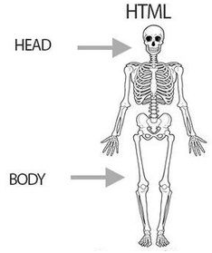
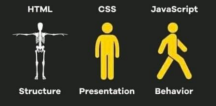

A palavra “computador” vem do verbo “computar” que, por sua vez, significa “calcular”. Sendo assim, podemos pensar que a criação de computadores
começa na idade antiga, já que a relação de contar já intrigava os homens.
Dessa forma, uma das primeiras máquinas de computar foi o “ábaco”, instrumento mecânico de origem chinesa criado no século V a.C.
Assim, ele é considerado o “primeiro computador”, uma espécie de calculadora que realizava operações algébricas.
No século XVII, o matemático escocês John Napier foi um dos responsáveis pela invenção da "régua de cálculo".
Trata-se do primeiro instrumento analógico de contagem capaz de efetuar cálculos logaritmos. Essa invenção foi considerada a mãe das calculadoras modernas.
Clients?
No desenvolvimento da web, "lado do cliente" refere-se a tudo em um aplicativo web que é exibido ou ocorre no cliente (dispositivo do usuário final).
Isso inclui o que o usuário vê, como texto, imagens e o resto da IU, junto com quaisquer ações que um aplicativo execute no navegador do usuário.
Linguagens de marcação como HTML e CSS são interpretadas pelo navegador no lado do cliente. Além disso, muitos desenvolvedores contemporâneos estão
incluindo processos do lado do cliente em sua arquitetura de aplicativos e deixando de fazer tudo no lado do servidor;
a lógica de negócios para páginas web dinâmicas*, por exemplo, geralmente é executada no lado do cliente em um aplicativo web moderno. Os processos do lado do cliente
quase sempre são escritos em JavaScript.
No exemplo da netflix.com acima, o HTML, CSS e JavaScript que ditam como a página principal da Netflix aparece para o usuário são interpretados pelo navegador no lado do
cliente. A página também pode responder a "eventos": por exemplo, se o mouse do usuário passar sobre uma das imagens em miniatura do filme, a imagem se expande e as
miniaturas adjacentes se movem ligeiramente para um lado para abrir espaço para a imagem maior. Este é um exemplo de processo do lado do cliente; o código dentro da
própria página web responde ao mouse do usuário e inicia essa ação sem se comunicar com o servidor.
O lado do cliente também é conhecido como front-end, embora esses dois termos não signifiquem exatamente a mesma coisa. O lado do cliente se refere apenas ao local
onde os processos são executados, enquanto o front-end se refere aos tipos de processos que são executados no lado do cliente.
*Uma página web dinâmica é aquela que não exibe o mesmo conteúdo para todos os usuários e muda com base na entrada do usuário.
A página inicial do Facebook é uma página dinâmica; a página de login do Facebook é, em sua maior parte, estática.
Muito parecido com o lado do cliente, o "lado do servidor" significa tudo o que acontece no servidor, em vez de no cliente. No passado, quase toda a lógica de negócios
era executada no lado do servidor e isso incluía renderizar páginas da web dinâmicas, interagir com bancos de dados, autenticação de identidade e notificações push.
O problema de hospedar todos esses processos no lado do servidor é que cada solicitação envolvendo um deles tem que viajar desde o cliente até o servidor, todas as vezes.
Isso apresenta uma grande quantidade de latência. Por esse motivo, os aplicativos contemporâneos executam mais códigos no lado do cliente; um caso de uso é renderizar
páginas da web dinâmicas em tempo real, executando scripts no navegador que fazem alterações no conteúdo que o usuário vê.
Como com "front-end" e "lado do cliente", back-end também é um termo para os processos que ocorrem no servidor, embora back-end se refira apenas aos tipos de processos
e lado do servidor se refira ao local onde os processos são executados.
Como é uma estrutura básica de um HTML?

Os documentos HTML incluem uma declaração de tipo de documento e o elemento raiz <html>. O cabeçalho e o corpo do documento estão aninhados no elemento <html>. Embora o cabeçalho do documento não esteja visível para o visitante sem deficiência visual, ele é essencial para que o site funcione. Ele contém todas as metainformações, incluindo informações de mecanismos de pesquisa e resultados de mídias sociais, ícones para a guia do navegador e atalhos da tela inicial para dispositivos móveis, além do comportamento e da apresentação do seu conteúdo. Nesta seção, você descobrirá os componentes que, embora não visíveis, estão presentes em quase todas as páginas da Web.
cd
HTML (Linguagem de Marcação de Hipertexto):
Imagine uma casa. O HTML é a estrutura da casa, definindo as paredes, o telhado, as portas e janelas. Ele organiza o conteúdo da página, como títulos, parágrafos, imagens e links.
CSS (Folhas de Estilo em Cascata):
Voltando à analogia da casa, o CSS seria a decoração e o design de interiores. Ele controla a aparência da página, definindo cores, fontes, espaçamento, layout e outros elementos visuais.
JavaScript:
No contexto da casa, o JavaScript seria como os sistemas de automação e comunicação. Ele permite que a casa responda a comandos, como abrir e fechar portas, acender luzes e interagir com os moradores. No site, o JavaScript adiciona interatividade, como animações, formulários, validações e atualizações em tempo real.
Html, CSS & JavaScript
Em analogia, o HTML é como o esqueleto de um site, a estrutura básica que define o conteúdo. O CSS é a pele e o estilo, responsável pela aparência visual e layout. Já o JavaScript é o sistema nervoso, adicionando interatividade e funcionalidades dinâmicas ao site, permitindo que ele responda às ações do usuário

Adicionar a cada documento HTML

Há vários recursos que devem ser considerados essenciais para toda e qualquer página da Web. Os navegadores ainda vão renderizar conteúdo se esses elementos estiverem ausentes, mas os incluem. Sempre.
<!DOCTYPE html>
A primeira coisa em qualquer documento HTML é o preâmbulo. Para HTML, você só precisa de
<!DOCTYPE html>. Pode parecer um elemento HTML, mas não é. É um tipo especial de nó chamado "doctype". O doctype diz ao navegador para usar o modo padrão. Se omitido, os navegadores usarão um modo de renderização diferente, conhecido como modo quirks. Incluir o doctype ajuda a evitar o modo quirks,
<html>
O elemento <html> é o elemento raiz de um documento HTML. Ele é o pai de <head> e <body>, contendo tudo no documento HTML, exceto o doctype. Se omitida, ela ficará implícita, mas é importante incluí-la, porque é o elemento em que o idioma do conteúdo do documento é declarado.
Idioma do conteúdo
O atributo de idioma lang adicionado à tag <html> define o idioma principal do documento. O valor do atributo lang é um código de idioma ISO de duas ou três letras seguido pela região. A região é opcional, mas recomendada, já que o idioma pode variar muito entre as regiões. Por exemplo, o francês é muito diferente no Canadá (fr-CA) em comparação com Burkina Faso (fr-BF). Essa declaração permite que leitores de tela, mecanismos de pesquisa e serviços de tradução saibam o idioma do documento.
O atributo lang não está limitado à tag <html>. Se houver texto na página em um idioma diferente do idioma do documento principal, o atributo lang deverá ser usado para identificar exceções ao idioma principal do documento. Assim como quando é incluído na cabeça, o atributo lang no corpo não tem efeito visual. Ele apenas acrescenta semântica, permitindo que tecnologias adaptativas e serviços automatizados saibam o idioma do conteúdo afetado.
Além de definir o idioma do documento e as exceções a esse idioma base, o atributo pode ser usado em seletores de CSS.
O primeiro elemento no <head> precisa ser a declaração de codificação de caracteres charset. Ele vem antes do título para garantir que o navegador possa renderizar os caracteres dele e todos os caracteres do restante do documento.
Outra metatag que deve ser considerada essencial é a metatag <viewport>, que ajuda na capacidade de resposta do site, permitindo que o conteúdo seja renderizado corretamente por padrão, independentemente da largura da janela. Embora a metatag da janela de visualização esteja disponível desde junho de 2007, quando o primeiro iPhone foi lançado, ela só foi documentada em uma especificação recentemente. É altamente recomendável porque permite controlar o tamanho e a escala de uma janela de visualização e evita que o conteúdo do site seja dimensionado para caber em um site de 960 pixels em uma tela de 320 pixels.
<head>
Aninhados entre as tags <html> de abertura e fechamento, encontramos os dois filhos: <head> e <body>:
<!DOCTYPE html>
<html lang="en-US">
<head>
</head>
<body>
</body>
</html>
O <head>, ou cabeçalho de metadados do documento, contém todos os metadados de um site ou aplicativo. O corpo inclui o conteúdo visível. O restante desta seção se concentra nos componentes encontrados aninhados na <head></head> de abertura e fechamento.
<body>
O Elemento Body é o que compõe todo o corpo de conteudo do html publicado
Uma lista ordenada é muito util para organizar items por ordem de importancia, como uma instrução ou ranking
Listas não ordenadas já se preocupa em seguir uma ordem de prioridade ou ranqueamento